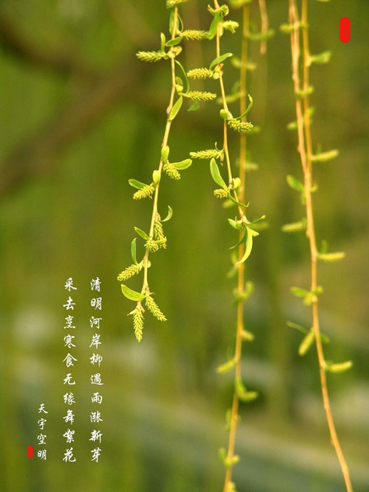

 每日过一段桥，看一回塘边柳。脉脉清辉中倒映着娉婷柳叶，层层叠叠细密铺就，风一起，卷起了珍珠帘，袅娜生烟，氤氲出江南的无尽缠绵温婉。搜肠刮肚，恨不得把所有美好的词汇都加诸在它身上。又觉得倾尽世间言语，难以描绘那风情万一，欲说还休，索性便不去亵渎那一份灵动，一份飘逸。 搓得鹅儿黄欲就，天气清明时候。满城风絮的时节里迎来一个比较伤感的节日：清明。也许，柳生性便带来了一分多愁善感。尤其，新柳初生，几分欢喜杂几分伤感，风一过，便绵绵铺开，直至这墨色江南里多了这一缕清愁。一丝惆怅，一点新绿，铺天盖地，困了这山河万里。风鬟雾鬓，缀一颗朱砂痣在春的胸膛，几分温软几分缱绻几分寂寥。
去年紫陌青门，今宵雨魄云魂。这般哀怨，这般神伤，总因这清明时节雨。纷纷，似断肠之泪，借那一片柳絮，一缕清风，坠于茫茫寰宇，沾湿了万里河山。倚红偎翠，拥着的却是一袭清殇，断魂。姹紫嫣红开遍，全不由人恋。落英缤纷里委红尘，埋香骨。剖开尘土，香魂无踪。魂逝何方？每日过一段桥，看一回塘边柳。脉脉清辉中倒映着娉婷柳叶，层层叠叠细密铺就，风一起，卷起了珍珠帘，袅娜生烟，氤氲出江南的无尽缠绵温婉。搜肠刮肚，恨不得把所有美好的词汇都加诸在它身上。又觉得倾尽世间言语，难以描绘那风情万一，欲说还休，索性便不去亵渎那一份灵动，一份飘逸。
搓得鹅儿黄欲就，天气清明时候。满城风絮的时节里迎来一个比较伤感的节日：清明。也许，柳生性便带来了一分多愁善感。尤其，新柳初生，几分欢喜杂几分伤感，风一过，便绵绵铺开，直至这墨色江南里多了这一缕清愁。一丝惆怅，一点新绿，铺天盖地，困了这山河万里。风鬟雾鬓，缀一颗朱砂痣在春的胸膛，几分温软几分缱绻几分寂寥。 去年紫陌青门，今宵雨魄云魂。这般哀怨，这般神伤，总因这清明时节雨。纷纷，似断肠之泪，借那一片柳絮，一缕清风，坠于茫茫寰宇，沾湿了万里河山。倚红偎翠，拥着的却是一袭清殇，断魂。姹紫嫣红开遍，全不由人恋。落英缤纷里委红尘，埋香骨。剖开尘土，香魂无踪。魂逝何方？
下面还有，往下滑↓
旧版弹性盒子居中布局
flex box
水平排列
垂直排列和排序